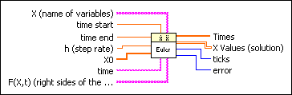
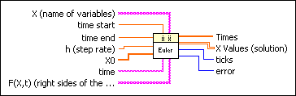
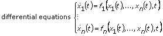
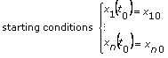
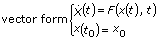
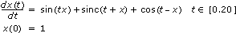
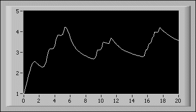

ODE Euler Method VI
Owning Palette: Ordinary Differential Equations VIs
Requires: Full Development System
Solves ordinary differential equations with initial conditions using the Euler method.

 Add to the block diagram Add to the block diagram |
 Find on the palette Find on the palette |
Owning Palette: Ordinary Differential Equations VIs
Requires: Full Development System
Solves ordinary differential equations with initial conditions using the Euler method.

| Add to the block diagram |
Find on the palette |
 |
X is an array of strings of variables. |
 |
time start is the start point of the ODE. The default is 0. |
|
time end is the end point of the time interval under investigation. The default is 1.0. |
|
h is the fixed step rate. The default is 0.1. |
 |
X0 is the vector of the start condition x[10], …, x[n0]. There is a one-to-one relation between the components of X0 and X. |
 |
time is the string denoting the time variable. The default variable is t. |
|
F(X,t) is a 1D array of strings representing the right sides of the differential equations. The formulas can contain any number of valid variables. |
 |
Times is an array representing the time steps. The Euler method yields equidistant time steps between time start and time end. |
 |
X Values is a 2D array of the solution vector x[10], …, x[n]. The top index runs over the time steps, as specified in the Times array, and the bottom index runs over the elements of x[10], …, x[n]. |
 |
ticks is the time effort for the whole calculation of the function values in milliseconds. |
 |
error returns any error or warning from the VI. Errors are produced by using the wrong inputs X, X0, and F(X,t). You can wire error to the Error Cluster From Error Code VI to convert the error code or warning into an error cluster. |
The general form of an ordinary differential equation (ODE) is

with

The functions f1, …, fn, the numbers, and the start point t = t0 are given. With the conventions F = (f1, …, fn); X(t) = (x1(t), …, xn(t)); and X0 = (x10, …, xn0),
we have

You have to determine functions X fulfilling the previous equations.
The Euler method is the most basic and often useful strategy to solve ODEs. Beginning with t0 and a fixed step rate h, usually relatively small, the new values
X(t0 + h) = X(t0) + hF(X(t0), t)
X(t0 + 2h) = X(t0 + h) + hF(X(t0 + h), t0 + h)

are calculated. This process stops, if time start + nh  time end, where time end is the right endpoint of the time interval under investigation.
time end, where time end is the right endpoint of the time interval under investigation.
The following illustration shows the solution of the following ordinary differential equation.


The previous equation and initial condition are entered on the front panel as: